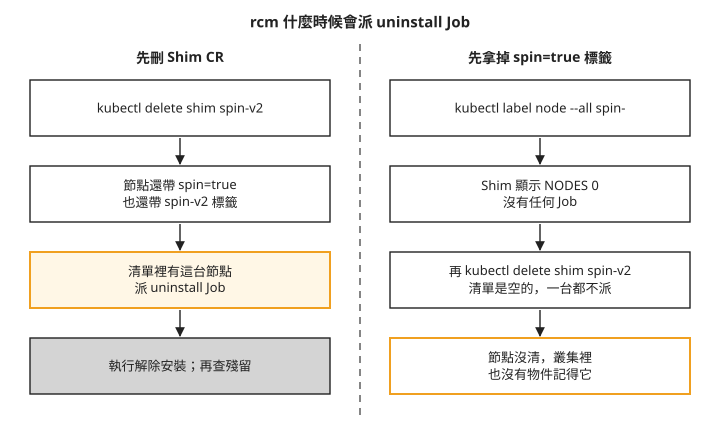
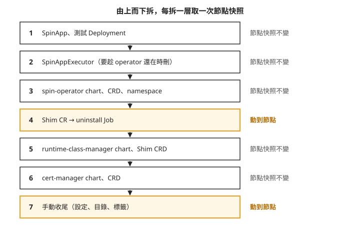
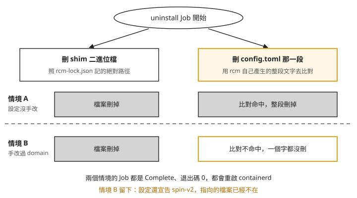

Day 8: 拆掉 SpinKube——解除安裝的觸發條件、拆除順序與節點殘留¶

SpinKube 試用完了，要把它從叢集拆掉。直覺的做法是：把節點上的 spin=true 標籤拿掉、helm uninstall 三個 chart、刪掉 CRD。每個指令都會回報成功，kubectl get shim 也會顯示沒有節點。可是 Day 6 為了讓 handler 生效，手動改過節點上 containerd 設定裡的 plugin domain。rcm 拆除時會不會把那段改過的設定一起清掉？如果沒有清掉，從叢集這一側看得出來嗎？
這一章把 Day 6、Day 7 裝上去的東西一層一層拆掉，每拆一層就取一次節點快照，最後跟 Day 1 存下的節點基準逐字比對。過程中會遇到兩種「指令成功、事情沒做」的情況，一種跟拆除順序有關，一種跟那段手改過的設定有關。
讀完之後，拆掉一套會改節點的外掛時，你能判斷節點是真的回到原狀，還是元件回報成功但設定還留著，也知道該照什麼順序拆、拆完要量哪兩件事。
開始之前¶
這一章的比對要成立，有一個前提：從開機到最後一次比對，叢集中間不能停機。Day 5 量過，本課 az aks stop 再 start 曾換成新 VM，節點上的改動全部消失（見 Day 5 的「停機抹掉節點層改動，而 RuntimeClass 留在 etcd」）。如果中途停過機，最後比對出來「跟基準相同」，就分不出是拆乾淨了，還是 VM 被換掉了。
先判斷起始狀態。情境 A 需要一台尚未加上 rcm 設定與檔案的測試節點，再讓 rcm 安裝；如果接著 Day 7 使用已修好 plugin domain 的節點，請直接從情境 B開始，這條路線未執行情境 A。停止、啟動叢集不保證每次換 VM。
使用 Day 6 的七份取樣腳本，在本機記錄拆除前後。另保留 kubectl get node -o yaml 的 Node UID 與 providerID，確認兩次比對是同一台節點。day8-s0 是下列實測在尚未安裝 rcm 的新節點上保存的基準；如果你的起點是 Day 7，應另命名為 day8-before-removal，不要直接期待得到相同的七份差異。
開機之後，rcm namespace 裡可能留著指向舊節點的 install Job，它們指向已經被換掉的舊節點，會讓 rcm 的 controller 反覆 panic（見 Day 7 的「Job 在、節點不在會 panic」）。先查 Job 與節點名稱；以下清除全部 Job 的做法僅用於本課專用 rcm namespace，且確認沒有進行中的安裝或解除安裝工作時：
接著貼上標籤，讓 rcm 在新節點上重新安裝 shim。這和 Day 6 的佈建步驟 的做法一樣，Day 7 的 Shim CR 還在叢集裡，不必重新套用：
install Job 跑完之後，節點回到 Day 6 剛裝好的樣子：config.toml 尾端多了 rcm 寫的 6 行、/opt/rcm/bin/ 下有 83.9 MiB 的 shim，節點多了 spin=true 與 spin-v2: provisioned 兩個標籤。這時的設定還沒手改過，也就是說 handler 還沒生效。後面兩個情境就從這裡分開。
步驟 1: 拿掉標籤，看 rcm 會不會拆¶
Shim CR 用 nodeSelector: {spin: "true"} 選節點，貼上標籤會觸發安裝。很自然會以為反過來，拿掉標籤就會觸發解除安裝。實際試一次：
等幾分鐘，rcm namespace 裡不會出現新的 Job。Shim 的狀態變成這樣：
NODES 0 看起來像是「這台節點已經不歸 rcm 管了」。但節點上的 6 行設定和 shim 一個都沒動，spin-v2: provisioned 標籤也還在。
rcm 只在 Shim CR 被刪除時才拆¶
rcm 把節點上的清理交給一顆 uninstall Job：和安裝時的 install Job 一樣，是派到節點上執行的 Job，只是做的是反向的事。要知道什麼時候會派出它，得看 rcm 的 controller。整支 controller 只有一處會走到解除安裝：
// Shim has been requested for deletion, delete the child resources
if !shimResource.DeletionTimestamp.IsZero() {
err := sr.handleDeleteShim(ctx, &shimResource, nodes)
…
}
DeletionTimestamp 是你下 kubectl delete 時，API server 在物件上蓋的時間戳。finalizer 是刪除前必須完成清理的標記；帶這個標記的物件不會立刻消失，controller 依刪除時間戳觸發清理（finalizer 在步驟 4 會再遇到）。所以觸發解除安裝的唯一動作是刪除 Shim CR，拿掉標籤只會讓節點掉出清單。
handleDeleteShim 收到的 nodes，是刪除當下還符合 nodeSelector 的節點，而且它只對帶著 spin-v2 標籤的節點派 Job。兩個條件都要成立。下面這張圖把兩種順序並排，左邊先刪 CR，右邊先拿標籤：

右欄最後一格是問題所在。標籤已經拿掉時再刪 Shim CR，指令馬上完成，不會出現任何 Job：
$ kubectl -n rcm get jobs
No resources found ← install Job 隨 ownerReference 被 GC
$ kubectl get runtimeclass wasmtime-spin-v2
Error from server (NotFound) ← RuntimeClass 也被 GC(Day 6 預告的行為,驗到了)
install Job 和 RuntimeClass 會跟著不見，是因為它們的 ownerReference 指向 Shim CR（Day 6 的 RuntimeClass 檢查看過）：子物件記著父物件是誰，父物件刪掉時，Kubernetes 的垃圾回收（GC）把子物件一起刪掉。結果是叢集裡已經沒有物件記得這台節點被改過，節點上的 83.9 MiB shim 和 6 行設定卻都還在。
還有補救的機會。rcm 把「這台節點裝過了」記在節點的 spin-v2: provisioned 標籤上，這個標籤還在，所以重新套用 Day 6 的 Shim CR、再貼回 spin=true，Shim 會回到 READY 1，而且不會重新安裝。回到這個狀態，再照正確的順序拆就好。要是連 spin-v2 標籤也沒了，就只能照步驟 6 手動清。
所以拆除順序是固定的：先刪 Shim CR，再動標籤。官方文件沒有寫刪除順序，NODES 0 也不會提示節點還留著東西（見疑難排解：先移標籤再刪 Shim CR）。
步驟 2: 情境 A——設定沒手改過時的解除安裝¶
先看 rcm 的解除安裝在它設計的條件下表現如何。節點上的設定是 rcm 自己寫的原樣，沒修過 plugin domain。標籤都在，直接刪 Shim CR：
uninstall Job 立刻出現，幾秒內 Complete。跑完後的節點：
| 項目 | 結果 |
|---|---|
config.toml |
1247 B → 999 B,逐字回到 Day 1 基準 |
/opt/rcm/bin/containerd-shim-spin-v2 |
已刪除 |
rcm-lock.json |
168 B → 16 B({"shims": {}}) |
節點標籤 spin-v2 |
已移除 |
| RuntimeClass | 隨 ownerReference 被 GC |
containerd 設定、有效設定、runtime handler 清單三份快照，都跟 Day 1 基準逐字相同。留下的只有兩樣：/opt/rcm/ 這個空目錄（裡面剩一個 16 B 的 lock 檔），以及你自己貼的 spin=true。rcm 為什麼不刪目錄，本課沒有查到原因。
這就是「拆乾淨」的樣子。下一個情境拿它當對照。
步驟 3: 情境 B 的準備——重新安裝並修好 domain¶
在 AKS 上，情境 A 只是對照組。Day 6 量過，rcm 寫的設定用的是 containerd 1.x 的 plugin 名稱，本課 AKS 既有設定已用新 plugin 名稱，額外加入舊路徑後 handler 沒有出現在解析結果與 Node 回報；要讓 SpinKube 真的跑得起來，就得把那兩行的 plugin domain 改成 2.x 的名稱（見 Day 6 的「rcm 猜 plugin 路徑，在 AKS 上猜錯」）。所以實際會被拆的節點，都是改過設定的節點。
沿用 Day 7 且已能回 HTTP 200 的節點，可直接保留目前狀態進入步驟 4。若剛完成情境 A，再照下面重建：
- 重新套用 Day 6 的 Shim CR。情境 A 已經把
spin-v2標籤清掉，這次 rcm 會真的重新安裝。 - 照 Day 6 的plugin domain 修正 修 plugin domain，重啟 containerd，確認
runtimeHandlers出現spin-v2。本課修 domain 前先把原檔備份成config.toml.rcm-1x-backup，步驟 6 收尾時會刪掉它；你沒有留備份就略過那一步。 - 跑一次 Day 7 的最小 Deployment，確認回應 HTTP 200。ttl.sh 上的映像過期的話，照 Day 6 的打包應用 重新推一次。
第 3 步不能省。拆之前要先證明節點是好的，拆完「跑不起來」才有對照意義。
步驟 4: 由上而下拆——只有兩層會動到節點¶
先把拆除順序畫出來。由上而下是 Kubernetes 物件依賴的方向：上層的物件需要下層的 controller 才刪得掉。右側標的是每拆一層之後，節點快照有沒有變：

照著編號看，七層裡只有第 4 層（uninstall Job）和第 7 層（手動收尾）會碰節點。spin-operator、cert-manager、helm chart、CRD、namespace，不論裝或拆都不會碰節點，每拆一層取的七份快照都跟前一份逐字相同。再加上安裝時的 install Job 與手改 domain，整個過程中會動到節點的就這四個動作。
第 1 層先刪 SpinApp 和 Day 7 的測試 Deployment。這裡刻意先刪光測試 pod，所以「還有 Spin pod 在跑時解除安裝會怎樣」本課沒有驗證，正式環境拆除前要自己測。
第 2、3 層的順序要注意。SpinAppExecutor 身上帶著 core.spinkube.dev/finalizer。finalizer 是物件上的一個標記，表示「刪除前必須由某個 controller 先做完清理，再把標記拿掉」；標記沒被拿掉，物件就一直停在 Terminating。處理這個標記的就是 spin-operator，所以要趁 operator 還在時刪 SpinAppExecutor，再拆 operator。
沿用 Day 7 的讀者只建立了 wasmlab 的 executor，應略過下方第一行 -n default，從第二行開始執行；修正後的寫法本課沒有實跑。下方保留的操作紀錄包含 default 與 wasmlab 兩個 namespace 的 executor，不能直接套用到只有 wasmlab 的環境：
$ kubectl -n default delete spinappexecutor containerd-shim-spin --timeout=60s
$ kubectl -n wasmlab delete spinappexecutor containerd-shim-spin --timeout=60s
$ helm uninstall spin-operator -n spin-operator
$ kubectl delete crd spinapps.core.spinkube.dev spinappexecutors.core.spinkube.dev
$ kubectl delete namespace spin-operator
反例：先拆 operator，executor 無法完成刪除¶
若先執行 helm uninstall spin-operator，再刪 SpinAppExecutor，物件會因為 core.spinkube.dev/finalizer 尚未移除而無法完成刪除。負責移除標記的 controller 已經被拆掉，kubectl delete 預設又會等待物件消失，因此持續等待。上面的順序先刪 executor，可避開這個問題。
以下保留這次錯誤順序之後，手動移除 finalizer 的處理紀錄：
步驟 5: 情境 B——刪 Shim CR，看手改過的設定會怎樣¶
第 4 層是這一章要看的重點。刪 Shim CR 之前，先清掉 rcm namespace 裡的舊 Job：
反例：沿用舊 uninstall Job，節點未重新清理¶
uninstall Job 的名字固定是 <節點名>-spin-v2-uninstall，rcm 用 server-side apply 送出它：把「這個物件應該長這樣」交給 API server，由 API server 跟現有的物件合併。若省略上面的清除步驟，情境 A 留下的同名 Job 內容又與這次相同，合併後物件不變，pod 不會重跑。controller 的 log 仍會寫 Deploying uninstall-Job，kubectl get jobs 也仍有 Complete 1/1，但 Job 的 UID 與完成時間都是上一次解除安裝的紀錄，節點沒有重新清理。
rcm 沒替 uninstall Job 設 ownerReference，chart 預設也沒設 TTL，所以舊 Job 不會自動消失。先清掉舊 Job 可避開這個問題；確認是否真的重跑時，要比對 Job 的 UID 或 completionTime。
預防的做法：rcm 的 chart 有一個 helm value rcm.nodeInstallerJob.ttl，預設是 0，等於關閉，文件也沒有提到。安裝 rcm 時帶上 --set rcm.nodeInstallerJob.ttl=<秒>，Job 跑完一段時間後會自動刪除，舊 Job 就不會擋住下一次解除安裝，也不會留下 Day 7 那種指向舊節點的 install Job。這是讀 rcm 原始碼與 chart 預設值得出的結論，本課沒有在叢集上實際驗證。它管不到刪除順序（先移標籤再刪 Shim CR）和手改過的設定（手改過 domain）這兩個問題。
清除舊 Job 後的解除安裝¶
清掉之後重新套用 Shim CR，再刪除它，這次會派出一顆新的 uninstall Job。它的 log 只有兩行，退出碼 0：
再看節點：config.toml 刪之前 1253 B，刪之後還是 1253 B，一個字都沒動；shim 二進位檔卻被刪掉了。
一個檔案刪得掉，一段設定刪不掉¶
uninstall Job 做兩件事，走兩條不同的路徑。下面這張圖把兩件事分成左右兩欄，上下兩列是兩個情境：

我們可以從圖上看到兩件事。第一，刪檔案只看 lock 檔記的路徑，跟設定內容無關，所以兩個情境都成功。第二，刪設定靠比對整段文字，手改過就對不上，可是兩個情境的 Job 看起來完全一樣。
右邊那條路徑在 rcm 的 RemoveRuntime() 裡：
// Warn if config.toml does not contain the runtimeName
if !strings.Contains(string(data), runtimeName) { // guard: just "spin-v2"
l.Warn("runtime config does not exist, skipping")
return false, nil
}
cfg := generateConfig(shimPath, runtimeName, c.runtimeOptions, data)
modifiedData := strings.ReplaceAll(string(data), cfg, "") // match: the whole block
err = afero.WriteFile(c.hostFs, c.configPath, []byte(modifiedData), 0o644)
…
return true, nil // hardcoded
照著程式由上往下看：
- 開頭的檢查只找
spin-v2這幾個字。手改過的那段裡還有spin-v2，檢查通過，所以不會印出skipping警告。 generateConfig重新產生 rcm「當初寫進去的那段」。它看config.toml有沒有version = 3來決定用哪個 plugin 名稱，AKS 的是version = 2，於是產生 1.x 名稱的版本，跟磁碟上改成 2.x 名稱的那段對不上，ReplaceAll一處都沒換掉。- 回傳值固定是
true，不檢查檔案到底有沒有變。上層看到true，就重啟 containerd、回報成功。
結果是 rcm 把一份內容沒變的檔案寫回磁碟、重啟 containerd，Job 顯示完成（見疑難排解：手改過 domain 之後解除安裝回報成功）。本課只驗了「改 plugin domain」這一種手改；改路徑、改選項的值、在中間插一行註解，從程式碼看也會對不上，但沒有實際測過。
handler 還在，檔案已經不在¶
留下來的 6 行設定，讓節點繼續宣告 spin-v2 這個 handler，而它指向的 shim 已經刪了。建一個 handler 是 spin-v2 的 RuntimeClass，再丟一顆 pod 上去，就看得到後果：
day8-dead-handler-probe 0/1 ContainerCreating ← 每 10–15 秒重試,永遠不會成功
Warning FailedCreatePodSandBox … failed to start shim: failed to resolve runtime path:
invalid custom binary path: stat /opt/rcm/bin/containerd-shim-spin-v2: no such file or directory
pod 順利排上節點，kubelet 也找得到 handler，直到 containerd 要啟動 shim 時才失敗，而且會一直重試。這是三條路線至今遇到的第三種失敗，前兩種在 Day 1 的「寫不寫 scheduling 給你兩種完全不同的失敗」看過：
| 形狀 | 條件 | 樣子 |
|---|---|---|
Pending |
RuntimeClass 有 scheduling,沒有節點命中 |
排不上去 |
no runtime for "…" is configured |
節點沒有這個 handler | 排得上,kubelet 拒絕 |
invalid custom binary path |
handler 在、指向的檔案不在 | 排得上、handler 查得到,containerd 啟動 shim 時失敗 |
第三種最難查。kubectl get runtimeclass、kubectl describe node 的 runtimeHandlers、containerd config dump，三個地方看起來都正常，要實際 ls 那個路徑才看得出檔案不在。所以解除安裝之後不要只看 Job 的退出碼，要量兩件事：containerd config dump | grep -c spin-v2 必須是 0，/opt/rcm/bin/containerd-shim-spin-v2 必須不存在。
看完後果，把測試用的 RuntimeClass 和 pod 刪掉，它們不該留到最後的比對。接著拆第 5、6 層：
$ helm uninstall runtime-class-manager -n rcm
$ kubectl delete crd shims.runtime.spinkube.dev
$ kubectl delete namespace rcm
$ helm uninstall cert-manager -n cert-manager
helm 預設不刪 chart 帶的 CRD。cert-manager 會在 helm uninstall 的輸出列出保留下來的六個 CRD，照著清單刪掉，再刪 cert-manager namespace。rcm 和 spin-operator 的 chart 不會提示，所以前面是自己指名刪的。這兩層拆完，節點快照都不變。
步驟 6: 手動收尾¶
到這裡，SpinKube 在叢集這一側已經沒有任何物件，但節點上還有 rcm 沒清的東西。以下是本課專用測試節點的清理指令。先檢查 RCM 標記到檔尾是否只有這個 shim 的設定，且 /opt/rcm 沒有其他 Shim 資源使用；條件不符時不能整段刪到檔尾或刪整個目錄，應只刪對應的區塊與檔案。
第 1–4 步在節點 shell 執行：先依 Day 1 取得 NODE_SHELL_POD，再以 kubectl -n wasmlab exec -it "$NODE_SHELL_POD" -- nsenter -t 1 -m -- bash 進入。第 5 步的 kubectl label 必須回到本機終端機執行：
# 1. cut the RCM block out of config.toml (uninstall left it behind)
sed -i '/^# RCM runtime config for spin-v2$/,$d' /etc/containerd/config.toml
# 2. remove the backup left by the domain fix — rcm never knew it existed
rm -f /etc/containerd/config.toml.rcm-1x-backup
# 3. the directory shell survives even scenario A
rm -rf /opt/rcm
# 4. without this, runtimeHandlers keeps advertising spin-v2
systemctl restart containerd
# 5. the label you applied yourself — rcm only cleans its own
kubectl label node --all spin-
第 1 步刪掉 RCM 那段之後，檔尾還會剩下 rcm 當初加在那段前面的一行空行。要跟基準逐字相同，第 1 步之後再把最後的空行收掉：
這五步沒有一步是 rcm 會替你做的。第 1、2、4 步在情境 A 不需要，只有設定被手改過才需要。問題是設定有沒有被手改過，從叢集這一側查不出來：拆之前，兩個情境的 kubectl get shim 都是 READY 1/1。因此每次都要實際檢查殘留，再決定需要清理哪些檔案，不能不看內容就照刪。
步驟 7: 跟 Day 1 基準比對¶
最後一次取節點快照時，依起點選擇比較對象。情境 A 從尚未安裝 rcm 的節點開始，以 day8-s0 比對全部七份快照；直接接續 Day 7 的情境 B，則以 day8-before-removal 確認拆除了哪些設定與檔案，拆前與拆後不應相同。B 路線還要另外與安裝前基準比對，才能判斷還原程度；若沒有保存安裝前基準，就只能確認拆除前後的差異。
以下是從 day8-s0 開始、完成情境 A、B 與手動收尾的比對結果：先跟 Day 1 基準比對三份關鍵檔案，再跟同一台 VM 上尚未安裝 rcm 的 day8-s0 比對七份。這裡的「五份 IDENTICAL」不適用於 B 路線的 day8-before-removal：
day8-final 對 Day 1 基準:
IDENTICAL containerd-config.toml
IDENTICAL containerd-config-dump.toml
IDENTICAL node-runtimehandlers.json
day8-final 對 day8-s0(同一顆 VM、七份全比):
五份 IDENTICAL；另兩份差異是 node-dirs 的 mtime，以及預期刪除的 RuntimeClass
三份關鍵檔案都回到 Day 1 的樣子。確認 Node 身分與 VM 未替換後，可以判斷這三項追蹤的設定已還原；這不是整台節點所有狀態的完整證明。
上述 day8-final 與 day8-s0 的七份比較中，兩份差異是目錄／設定檔的修改時間，以及 wasmtime-spin-v2 RuntimeClass 已被刪除。後者是預期的叢集狀態變更，不能說完全沒有狀態差異。另一次「對 Day 1」的 shim 清單比較，才有取樣器空白壓縮方式不同的情況；兩種比較不能混在一起。
SpinKube 適合誰¶
Day 6 到今天三天走完，再加上 Day 0 判斷專案是否還活著的方法查到的資料，可以替這條路線下判斷了。
2026-08 課程查核時，spin CLI 持續有開發活動，但 shim、rcm、operator 的人工維護較少，rcm 也有長期未獲處理的問題。採用這條路線時，團隊需要能自行處理節點設定與解除安裝殘留，並評估對 rcm、operator 的依賴；部署前應重新檢查各層的維護狀況。
適合：wasm 工作負載必須跟一般 Kubernetes 工作負載長得一樣的團隊。Day 4 的 WasmEdge 也使用 RuntimeClass；SpinKube 在此之外增加 Spin 應用的部署工具：真正執行 wasm 的是 containerd 加一支 shim，operator 和 rcm 都只是讓安裝方便一點，Day 7 已經證明同一支應用可以用普通 Deployment 部署，不經 operator 產生資源。若要減少對 operator 的依賴，可評估只使用 RuntimeClass 加 shim 這兩層，把 rcm 和 operator 當成可以替換的工具。
不適合：沒有人負責維護節點層操作手冊的團隊。在 AKS 上，SpinKube 要手改設定才能用，而改過設定就拆不乾淨，節點的清理得自己來，步驟 6 那五步是起點。
疑難排解¶
先移標籤再刪 Shim CR，節點沒被清理¶
症狀:拿掉 spin=true 後，kubectl get shim 顯示 NODES 0。接著刪 Shim CR，指令馬上完成，沒有 uninstall Job，install Job 和 RuntimeClass 也跟著消失，但節點上的 shim 和 6 行設定都還在。
原因:rcm 只在 Shim CR 被刪除的那一刻，對還符合 nodeSelector 而且帶 spin-v2 標籤的節點派 uninstall Job，標籤先拿掉，清單就是空的（步驟 1）。
修法:節點上的 spin-v2: provisioned 標籤還在的話，重新套用 Shim CR、貼回 spin=true，等 Shim 回到 READY 1，再照「先刪 CR、再動標籤」的順序拆。spin-v2 標籤也沒了，就照步驟 6 手動清。
手改過 domain 之後，解除安裝回報成功，設定原封不動¶
症狀:uninstall Job 的 log 只有 uninstall called 和 restarting containerd 兩行，退出碼 0，沒有 skipping 警告。之後 config.toml 大小沒變、containerd config dump 還找得到 spin-v2、runtimeHandlers 還有 spin-v2，shim 二進位檔卻被刪了。新的 pod 用到這個 handler，會卡在 ContainerCreating，事件是 invalid custom binary path。
原因:rcm 用自己產生的整段文字比對要刪的設定，手改過 plugin domain 就對不上，而回傳值固定是成功（步驟 5）。
修法:照步驟 6 手動收尾。之後每次解除安裝都量兩件事：containerd config dump | grep -c <handler> 必須是 0，runtime_type 指向的路徑必須不存在。在 AKS 上要讓 SpinKube 跑起來就得照 Day 6 修 domain，所以修了就要預期解除安裝會留下這段設定。
想一想¶
- 同事要把 SpinKube 從一個三台節點的叢集拆掉。他先把其中一台的
spin=true標籤拿掉，看kubectl get shim從NODES 3變成NODES 2，覺得那台已經拆好了，接著才刪 Shim CR。三台節點裡，哪幾台會被 rcm 清理？你會怎麼確認？ - 你在 AKS 上照步驟 6 收完尾，過一週又要在同一個叢集重新試裝 SpinKube，裝好、修好 domain，最後又要拆。第二次拆之前，
rcmnamespace 裡該先做什麼？拆完之後你會量哪兩件事，來決定要不要再做手動收尾？ - 另一套 operator 也用 finalizer 保護它的 CR。你只想先把 operator 的 Deployment 停掉，CR 留著之後再刪。這樣做之後刪 CR 會發生什麼？如果已經這樣做了，你有哪兩種方式讓 CR 刪得掉？
小結¶
rcm 的解除安裝只在 Shim CR 被刪除時觸發，而且只處理那一刻還被選中、還帶著 spin-v2 標籤的節點，所以拆除要照固定順序：先刪 CR，再動標籤；帶 finalizer 的 CR 要趁 controller 還在時刪；同一台節點再拆一次前，要先清掉舊的 uninstall Job。在設定沒被手改過的情況下，rcm 能把節點還原到 Day 1 的基準；在 AKS 上修過 plugin domain 之後，它只刪得掉 shim 檔案，設定原封不動，卻照樣回報成功，留下一個 handler 在、檔案不在的節點。之後拆任何會改節點的外掛，都不要只看 Job 的退出碼或 CR 的狀態，要直接量節點：有效設定裡還有沒有那個 handler、它指向的檔案在不在，最後在同一個 VM 生命週期內跟基準逐字比對。
延伸閱讀¶
想再深入，可以從這幾份開始：
- Kubernetes:Finalizers —— 步驟 4 拆除順序背後的機制。文件說物件會停在 terminating，直到控制平面「or other components」完成 finalizer 定義的動作；負責的元件已經被拆掉時，就是先拆 operator 的反例的情況。
- Kubernetes:Server-Side Apply —— 步驟 5 舊 Job 擋住新 Job 的機制。Day 3 的「
kubectl scale過的 Deployment 會讓下一次helm upgrade失敗」遇到的是它的欄位所有權，這一章遇到的是對內容相同的物件 apply 時什麼都不改。 - runtime-class-manager ——
internal/containerd/configure.go裡的RemoveRuntime()不到三十行，開頭的檢查、整段比對和固定的回傳值都在裡面，可以對照步驟 5 逐行讀。
下一步¶
三條路線的實作到這一章全部結束，各自的判斷也都在收尾那天給了：wasmCloud 在 Day 3、WasmEdge 在 Day 4、SpinKube 在本章。Day 9 把三份判斷收成一張決策表，每一格標明是實測、查證還是推論。
SpinKube 標誌為 CNCF(Linux Foundation)官方資產,此處作社群教學用途。